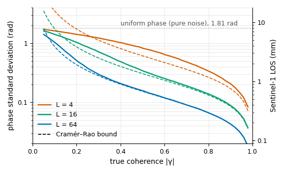
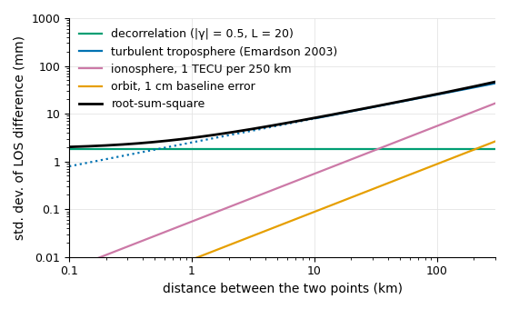

| SAR Concepts: InSAR Error Budget | |
An InSAR displacement is only as good as the phase terms you did not model. For one Sentinel-1 12-day pair the troposphere usually dominates, at 1–3 cm and sometimes more than 10 cm, while decorrelation noise after multilooking is 0.5–3 mm. Most other terms are millimetres, but ionospheric ramps (ascending dusk passes, solar maximum) and tides can reach a centimetre or more across a scene. In a multi-year time series the random terms average down to below about 1 mm/year in velocity, and the limit becomes the systematic ones: seasonal stratified delay, long-wavelength ionosphere and plate motion, phase bias, unwrapping errors and the choice of reference point.
All magnitudes are in line of sight (LOS) for Sentinel-1 IW (λ = 5.55 cm, so 1 rad = 4.4 mm and one fringe = 2.8 cm). The phase terms themselves are introduced in InSAR Fundamentals.
| Source | Typical magnitude (S-1) | Spatial signature | Mitigation in SNAP / elsewhere |
|---|---|---|---|
| Decorrelation noise | 0.5–3 mm per pair after multilooking; up to random phase at low coherence | uncorrelated from pixel to pixel | multilooking, Goldstein filtering, Phase Linking / PS selection |
| Troposphere, turbulent | 1–3 cm per pair; averages down in a series | blobs and streaks, km to tens of km | stacking; weather models or GACOS outside SNAP |
| Troposphere, stratified | cm to dm in high relief; seasonal | follows topography | Empirical Tropospheric Correction; ETAD troposphere |
| Ionosphere | 1.4 cm per TECU of differential TEC | long-wavelength ramps; azimuth streaks (mainly L-band, high and equatorial latitudes) | Ionospheric Correction (split spectrum); ETAD ionosphere |
| Orbit | about 2 mm across the swath per cm of baseline error | planar ramp | Apply Orbit File (precise orbits) |
| DEM error | B⊥Δh/(R sin θ): 1.8 mm for Δh = 10 m and B⊥ = 100 m | follows DEM errors: buildings, forest edges, recent surface change | accurate DEM, short B⊥; DEM-error estimation outside SNAP |
| TOPS azimuth misregistration | 0.25 mm for 0.001 pixel, 2.5 mm for 0.01 pixel | steps at burst seams | ESD (Enhanced Spectral Diversity) |
| Unwrapping errors | whole cycles of 2.8 cm | patches bounded by low coherence, water or tile edges | multilook and filter first; redundant networks |
| Solid-Earth tide | up to about 25 cm vertical; differential ramp of about a centimetre per scene | very long wavelength | ETAD (geodetic layer) |
| Ocean-tide loading | up to cm near coasts with large tides | long wavelength, coastal | outside SNAP |
| Plate motion | mm/year over hundreds of km (in velocity) | cross-track gradient | plate-motion model, outside SNAP |
| Thermal dilation | mm to cm, seasonal | on structures only | temperature term, outside SNAP |
| Short-baseline phase bias | systematic, can look like slow motion | vegetated and farmed land | Phase Linking, longer pairs |
| Reference point | everything above, at the reference | constant offset over the whole map | stable, coherent, nearby reference |
Table 1. Error sources for Sentinel-1 InSAR. Magnitudes are orders of magnitude, not specifications.
For L independent looks of a pair with coherence |γ|, the phase standard deviation is bounded below by the Cramér–Rao bound (Rodríguez and Martin, 1992):
σφ = √(1 − |γ|²) / ( |γ| √(2L) )
σd = (λ / 4π) · σφ
The bound holds only for many looks and moderate to high coherence (Figure 1). For L = 64 it is within about 6 % of the true value above |γ| = 0.3; for L = 4 it is up to about 25 % low between |γ| = 0.3 and 0.9, and below about 0.25 it is meaningless (it even exceeds the uniform-phase limit). At very low coherence the phase becomes uniform (1.81 rad). L counts independent looks, which are fewer than the pixels in the window, and the estimated coherence is biased upward (see Coherence). Plugging an estimated coherence into the bound therefore understates the noise where coherence is low.
| |γ| | L | σφ bound (rad) | σφ simulated (rad) | σd simulated (mm) |
|---|---|---|---|---|
| 0.3 | 20 | 0.50 | 0.63 | 2.8 |
| 0.5 | 20 | 0.27 | 0.30 | 1.3 |
| 0.7 | 20 | 0.16 | 0.17 | 0.7 |
| 0.5 | 100 | 0.12 | 0.12 | 0.5 |
| 0.9 | 4 | 0.17 | 0.21 | 0.9 |
Table 2. Phase noise per pair (simulation: circular Gaussian scatterers, 40 000 trials).

Figure 1. Phase standard deviation against true coherence for L = 4, 16 and 64 independent looks (solid: simulation; dashed: Cramér–Rao bound). Right axis: Sentinel-1 LOS displacement.
Tropospheric delay has a stratified, height-correlated part and a turbulent part. Differential delays are typically 1–3 cm per pair and can exceed 10 cm in humid or mountainous areas (Zebker, Rosen and Hensley, 1997). The ionospheric phase scales as 1/f, and its LOS equivalent as 1/f²: one TECU of differential TEC is 1.4 cm at C-band and about 25 cm at L-band. At C-band it mostly appears as a long-wavelength ramp. Mechanisms and corrections are on the Atmospheric and Ionospheric Phase page.
An error δB⊥ in the perpendicular baseline leaves a residual ramp of about δB⊥·Δθ in LOS, where Δθ ≈ 0.22 rad is the span of look angles across the IW swath: about 2 mm across the swath per centimetre of baseline error. With precise (POEORB) orbits this is millimetres or less; see Orbits and ETAD.
A DEM error Δh leaves residual topographic phase that looks like displacement:
δd = B⊥ Δh / (R sin θ)
with R the slant range and θ the incidence angle (R sin θ ≈ 544 km for S-1 IW). Small for one pair, it matters where the DEM is tens of metres wrong (new buildings, felled forest, mines, glaciers). In a time series the error follows B⊥ from date to date, so it is not random in time; Fattahi and Amelung (2013) estimate Δh jointly with the displacement.
For TOPS, an azimuth misregistration of 0.001 pixel gives about 3° of phase jump at the burst seams, 0.01 pixel about 30° (see TOPS). Unwrapping errors are whole cycles: 2.8 cm steps that usually follow coherence boundaries (see Phase Unwrapping).
The solid-Earth body tide moves the ground by up to about 25 cm vertically within a day. Its wavelength is thousands of kilometres, so within one scene the difference between two dates is a gentle ramp of about a centimetre. Ocean-tide loading adds centimetres near coasts with large tides. These terms also shift the geometry: correcting the ionosphere, solid-Earth tides and troposphere reduced Sentinel-1 range misregistration by more than a factor of four (Yunjun et al., 2022). In multi-year velocities, rigid plate motion of centimetres per year, seen with an incidence angle that changes across the swath, gives gradients of millimetres per year over hundreds of kilometres (Stephenson et al., 2022). Metal and concrete structures expand with temperature, which gives seasonal signals on persistent scatterers. Over distributed scatterers, short-baseline networks accumulate a systematic phase bias (see Phase Linking in Depth).
Displacement is relative to a reference area, so every error at that area is copied, with opposite sign, to the whole map (see From Phase to Displacement).
Independent terms add in variance:
σtotal² = σnoise² + σtropo² + σiono² + σorbit² + …
What matters for a displacement map is the error of the difference between two points a distance r apart, described by the structure function D(r) = E[(d(x + r) − d(x))²]. Decorrelation noise is independent between pixels, so it adds √2·σ whatever the distance. Atmosphere, orbit and tides are spatially correlated: two nearby points share most of the delay, and the difference grows with distance. From GPS in southern California, Emardson et al. (2003) found an atmospheric standard deviation of about 2.5·√(r / 1 km) mm, i.e. 8 mm at 10 km and 25 mm at 100 km. A point next to the reference is therefore far more accurate than one 100 km away (Figure 2).

Figure 2. Illustrative error of the LOS difference between two points against their distance, for one Sentinel-1 pair. Troposphere: Emardson et al. (2003), zenith delay, stated valid for 10–800 km (dotted below). The coefficient is site-dependent; LOS values are about 25 % larger than zenith. Ionosphere and orbit: linear ramps for the stated examples. Black: root-sum-square.
In a series of N dates spanning T years, a per-date error σ that is random in time gives a velocity error of about
σv ≈ σ √(12 / N) / T
For σ = 10 mm, N = 150 and T = 5 years this is 0.6 mm/year. Errors that are not random in time (seasonal delays, DEM error correlated with B⊥, plate motion, phase bias) do not average out in this way.
| Error | Operator | What it does |
|---|---|---|
| Orbit | Apply Orbit File (Apply-Orbit-File) | Default Sentinel Precise (Auto Download); replaces the annotated state vectors. |
| Troposphere, ionosphere, solid-Earth tide (S-1) | S1 ETAD Correction
(S1-ETAD-Correction) | Apply range-delay phase correction
(outputPhaseCorrections, off by default) uses the
tropospheric, geodetic (tide) and ionospheric range layers. Used alone (Resample image off) it writes
an etadPhaseCorrection grid, which Interferogram subtracts only if both images carry it; with both
switches on (IW only, the GSLC set-up) the phase is removed from the pixels. Model based: it captures the
long-wavelength and height-dependent part, not turbulence. |
| Stratified troposphere | Empirical Tropospheric Correction
(EmpiricalTropoCorrection) | Phase–elevation regression (linear or
quadratic) on unwrapped phase, on a sample grid (every 20 pixels), skipping pixels with coherence below 0.3 when a coherence band is present. |
| Ionosphere | Band Pass Filter (BandPassFilter), Ionospheric Correction
(IonosphericCorrection) | Split-spectrum estimate from full, low and high sub-band
unwrapped interferograms; writes ionosphericPhase. |
| TOPS misregistration | Enhanced Spectral Diversity
(Enhanced-Spectral-Diversity) | Azimuth shift from the burst overlaps, single pair or network. |
| Decorrelation noise | Goldstein Phase Filtering, Phase Linking | Goldstein smooths the wrapped phase for unwrapping; it copies the coherence band unchanged. Phase Linking reduces noise over distributed scatterers. |
| Noise in a time series | SBAS Inversion (SBASInversion) | Weights each pair
by the inverse of the Cramér–Rao variance with L = coherenceLooks (100) and ignores a pair at pixels where its coherence is below coherenceMin (0.3). |
Points to note:
flatteningPhase band and the flattened output. With the
default (natural-phase) output Interferogram does not read them, so they do not correct the interferogram;
in a stack where every date is flattened, the modelled tide and dry delay are removed from it (see
Geocoded SLC).velocity of SBAS Inversion is a straight-line fit only (no seasonal or DEM-error term).velocity_uncertainty from SBAS Inversion is the formal error of that line fit, from
the scatter of the dates about it at that pixel. It contains neither spatially correlated errors nor the
error of your reference area.closure_phase_rms wraps every triplet closure to (−π, π], so it cannot
show whole-cycle unwrapping errors. Look instead at temporal_coherence and the
residual_* bands (Output Residuals), or form Unw12 + Unw23
− Unw13 in Band Maths: after referencing all three to the same point, patches near ±2π mark an unwrapping error.velocity_uncertainty as the accuracy of the velocity map.closure_phase_rms to reveal unwrapping errors.Related concepts: Coherence, Atmospheric and Ionospheric Phase, InSAR Time Series, Phase Unwrapping, Quality Control.